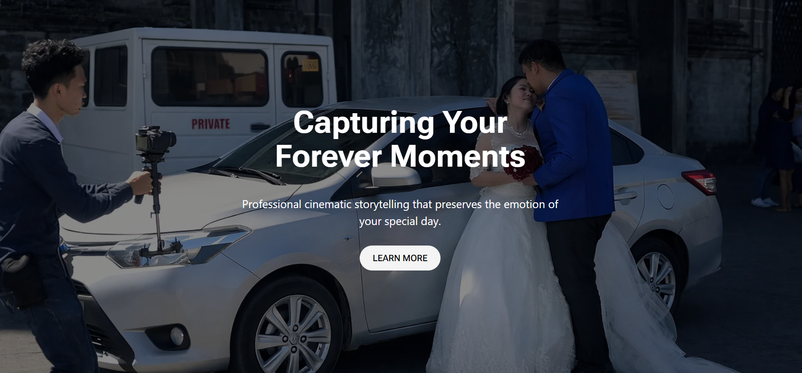
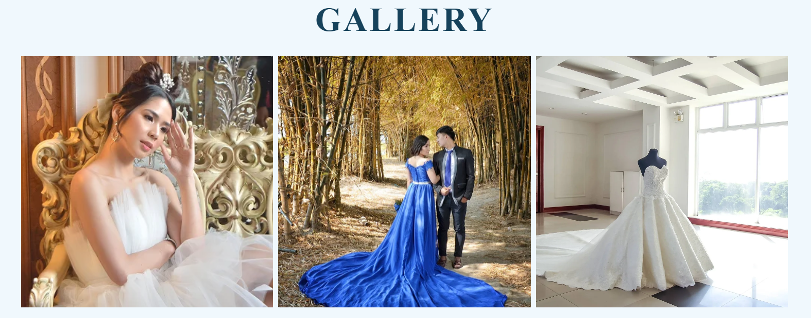

The Objective
Bossrich is a high-performance photography portfolio designed to showcase cinematic visual storytelling through a seamless digital experience. Built on WordPress, the platform serves as both a creative gallery and a functional business tool, allowing clients to explore diverse photography sets and book sessions directly.
System Architecture
Client Vault
Secure, password-protected portals for private gallery proofing and high-resolution asset delivery.
Booking Workflow
Integrated scheduling system and inquiry pipelines designed to convert viewers into booked clients.
Media Performance
Advanced lazy-loading and CDN integration to serve 4K imagery without compromising core web vitals.
WordPress Engine
Custom-themed CMS architecture leveraging PHP and MySQL for flexible content and metadata management.